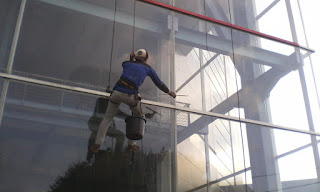

Kian berkembangnya kemajuan zaman, menciptakan banyak bahan atau material komplemen yang dapat mempercantik hunian atau daerah usaha anda. Banyak material pensupport yang dapat diaplikasikan seperti kaca, parket lantai kayu dan masih banyak lagi. Tidak hanya memperindah, namun material pelangkap tersebut dapat memberi garansi keamanan pada penghuni di dalamnya. Tapi kini, penggunaan kaca kian meluas.
Kini telah hadir berbagai maca ragam kaca yang bisa dijumpai, setiap kaca memiliki fungsinya masing-masing. Dapat untuk system keamanan, estetika dan masih banyak yang dapat di peroleh dari pemasangan kaca. Jenis kaca-kaca hal yang demikian diantaranya ialah kaca tempered, kanopi kaca, kaca frameless, kaca cermin Surakarta, railing kaca dan masih banyak ragam kaca lainnya yang dapat anda dapatakan dan anda aplikasikan pada bangunan. Tak hanya material kaca sekarang juga terdapat material kayu atau parket lantai kayu jati. Berikut ini sedikit penjelasan mengenai pelbagai tipe kaca dan fungsi kaca dan juga parket lantai kayu jati yang dapat anda temukan.
Jual Kaca Cermin di Surakarta

Kaca cermin bisa diciptakan aksesoris untuk mempercantik interior rumah Anda. Kaca cermin dilapisi dengan pelapis transparan tipis dan oksida logam sebagai lapisan pelapis. Ada banyak sekali desain cermin yang bisa Anda pilih. Untuk bangunan bertingakat, terutama diterapkan pada ragam dinding kaca. Sekarang, cermin tidak hanya berbentuk persegi atau persegi panjang saja. Jadi, Anda mempunyai banyak pilihan untuk menetapkan cermin yang Anda pilih benar-benar dapat mempercantik interior rumah Anda. Bahkan juga komponen tepi. Sementara itu, saat diamati dari luar, kaca ini reflektif. Artinya, Anda tidak dapat memperhatikan yang ada di dalam ruangan.
Anda juga bisa tentukan apakah berkeinginan memiliki cermin yang memiliki bingkai atau tak. Atau Anda dapat memilih cermin yang dibangkai dengan bermacam-macam variasi bahan seperti kayu, aluminum, plastik, dan bahan lainnya. Maka hanya persegi atau persegi panjang. Atau kaca cermin Surakarta ini juga dapat diciptakan sebagai bahan pintu lemari. Harga yang relatif murah dan mutu terbaik ialah ciri khas dari dis.or.id.
Info Pemesanan Selengkapnya
Google Maps: https://www.google.com/maps/d/u/0/viewer?mid=1HNPQwTg5M-VmcXHvNbVncTuxY7ALbdIQ&ll=-7.27380280025364%2C112.65243155000007&z=18
Note: https://www.facebook.com/notes/distributor-of-industrial-supply/pabrik-supplier-kaca-cermin/1785720801727799/
Event: https://www.facebook.com/events/135275393812568/
Distributor & Supplier Pintu Kaca

Kini sudah tersedia berbagai ragam dan beragam figur pintu kaca yang sedang menjadi popularitas dikala ini. Tak cuma di gedung atau perkantoran, tetapi pntu kaca juga bisa anda aplikasikan pada rumah agar sinar dapat langsung masuk pada ruangan dan memberikan suasana hangat. Dengan bermacam varian frame seperti pigura kayu atau aluminium dan tanpa pigura atau frameless yang merupakan desain pintu kaca tanpa frame. Tidak Anda berharap mempunyai pintu kaca lipat yang terdiri dari beberapa pigura. Desain tersebut dapat disesuaikan dengan konsep properti Anda. Anda tinggal tentukan saja figur pintu kaca seperti apa yang berkeinginan Anda miliki.
Anda dapat mempunyai pintu kaca favorit anda kini juga dengan mengunjungi dis.or.id. Jika ahli yang benar-benar profesional sehingga amat siap untuk menciptakan pintu kaca seperti apa yang berharap Anda miliki.
Dis.or.id juga menyiapkan sebagian tipe kaca dengan ketebalan yang berbeda.
Jasa Pemasangan Railing Kaca
Kini railing kaca kini semakin populer. Anda tidak hanya ditawarkan dengan contoh atau desain railing kaca yang sama. Maka dari itu, komponen-bagian tangga tak lagi diwujudkan dengan bahan kayu. Bahkan aksesoris seperti pada pegangan tangga bahkan tidak terbuat dari bahan kayu lagi namun kaca dan aluminum. Maka dari itu, para produsen berusaha untuk menjadikan railing yang terbuat dari kaca dengan contoh yang berbeda-beda. Tetapi, bukan cuma figur yang sebaiknya Anda jadikan pertimbangan ketika berkeinginan memesan railing kaca ini. Bahkan juga bahan yang dipakai.
Anda bisa memilih kaca dengan kualitas terbaik. Tentukan juga desain railing kaca. Kalau itu, kaca ini dapat pecah namun tidak menimbulkan pecahan yang runcing melainkan pecahan kecil-kecil dan lembut. Dengan demikian, pecahan kaca tempered tak akan melukai orang yang terkena pecahan. Pecahannya sungguh-sungguh kecil dan lembut sehingga tidak akan melukai siapapun yang terkena pecahan. Sekarang pasti, railing kaca ini menjadi alternatif yang ideal. Kalau memberikan kesan minimalis pada interior rumah, ini juga membikin rumah Anda kelihatan lebih nyaman untuk dihasilkan daerah tinggal.
Sekarang dis.or.id telah menyediakan railing kaca berkulitas dan bermutu. ukuran dan ketebalan railing kaca sudah tersedia.
Distributor, Supplier & Jasa Pasang Kanopi Kaca

Banyak ragam kaca kanopi yang digunakan sebagai atap, tak cuma satu variasi saja. Canopy kaca dengan atap kaca memang sebuah bangunan yang asangat elgan untuk jaman modern seperti kini ini dengan harga yang benar-benar lumayan bila di bandingkan kanopi atap lazim. Tak hanya sekedar tembus pandang. Jikalau tembus pandang, kaca meresap cahaya yang masuk sehingga kian tebal kaca karenanya semakin sedikit sinar yang bisa melaluinya, maka sifat transparannya makin berkurang. Pada atap akrilik, absorpsi cahaya yang terjadi demikian kecil sehingga meski ketebalannya bertambah, sifat transparannya tidak banyak berubah. Atap akrilik atau dapat juga disebut atap kaca acrylic ini banyak ditemukan di sebuah bangunan rumah, seperti ruko, apartemen, cafe, mall, hingga bangunan gedung.
Tak anda dikala ini sedang membutuhkan kanopi kaca, anda bisa lantas mengunjungi dis.or.id. Ini kelihatan dari bahan material yang di pakai dalam pembuatan kanopi kaca. Anda juga dapat memenfaatkan jasa pemasangan atap kanopi kaca dengan segala tipe kaca yang anda butuhkan yang sesuai dengan kriteria atap kanopi. Jikalau fungsi utama kanopi sebagai pelindung untuk bangunan hal yang demikian, pemasangan kanopi kaca juga dapat membikin bangunan menjadi terlihat lebih indah dan menarik, apalagi menggunakan konsep yang sama dengan konsep rumah minimalis. Tidak anda sedang mencari kanopi kaca, anda bisa segera mengunjungi dis.or.id.
Distributor & Supplier Kaca Shower
Kaca shower kini menjadi suatu hal yang banyak diminati sebab banyak orang yang mengharapkan sebuah kamar mandi yang mempunyai fungsi selain estetika yakni kenyamanan. Kecuali hal yang demikian sekarang bisa anda lakukan dengna menerapkan kaca shower untuk kamar mandi anda. Kelebihan shower screen dibanding dengan sistem penyekatan yang lain merupakan diciptakan dalam wujud yang sudah jadi dan tinggal dipasang saja. Tentunya banyak kelebihan yang bisa di peroleh dari penerapan kaca shower pada kamar mandi di rumah anda. Di samping pintu kaca shower akan membuat kamar mandi kecil kelihatan lebih besar.
Tak anda sedang mencari kaca shower untuk kamar mandi, anda bisa lantas mengunjungi dis.or.id. Disana anda bisa mendapat kaca shower yang bermutu dan harga yang juga relatif murah. Tidak terbaik dan harga relatif murah.
Distributor, Supplier & Jasa Pasang Kanopi Kaca

Kanopi kaca kian banyak diminati karena sekarang sudah banyak bangunan yang mengaplikasikan bahan kaca untuk lebih mempercantik tampilan rumah. Apabila akan memberikan kesan lapang ketika berada di kamar mandi, mandi dengan shower akan memberikan kesejukan tersendiri dibanding kamar mandi dengan bak mandi. Canopy kaca dengan atap kaca memang sebuah bangunan yang asangat elgan untuk jaman modern seperti sekarang ini dengan harga yang sangat lumayan kalau di bandingkan kanopi atap umum. Jadi telah tak heran lagi segala orang ingin mencari harga yang betul-betul kompetitif untuk menyesuaikan budget atau anggaran mereka masing – masing untuk membuat produk canopy kaca. Jika tembus pandang, kaca meresap cahaya yang masuk sehingga semakin tebal kaca maka semakin sedikit cahaya yang bisa melewatinya, karenanya sifat transparannya makin berkurang.|Di samping pintu kaca shower akan membikin kamar mandi kecil terlihat lebih besar. Atap akrilik atau bisa juga disebut atap kaca acrylic ini banyak ditemukan di sebuah bangunan rumah, seperti ruko, apartemen, kafe, mall, hingga bangunan gedung.
Tidak anda ketika ini sedang memerlukan kanopi kaca, anda bisa seketika mengunjungi dis.or.id. Kecuali disana anda bisa menerima penawaran mengenai jasa pemasanga kanopi kaca. Sekiranya fungsi utama kanopi sebagai pelindung untuk bangunan hal yang demikian, pemasangan kanopi kaca juga bisa membuat bangunan menjadi terlihat lebih cantik dan menarik, apalagi mengaplikasikan konsep yang sama dengan konsep rumah minimalis. Setelah kaca untuk atap kanopi cukup digemari. Disana anda akan mendapat kanopi kaca yang cocok dengan beragam ketebalan dan harga yang cukup terjangkau.
Jasa Maintenance Kaca

Jasa maintenance kaca sudah menjadi pilihan tepat seandainya Anda berharap menjalankan perawatan gedung yang terbuat dari kaca. Dengan semakin berjalan nya waktu tentu gedung yang mempunyai bahan kaca pada sisinya memerlukan perawatn khusus agar tetap awet dan bendung lama. Jasa maimtenence kaca menyediakan layanan pembersihan kaca gedung serta pembenaran kaca gedung yang rusak, pecah dan tak pantas lagi untuk di pakai. Kecuali hanya membersihkan kaca, jasa maintenance kaca juga bisa melaksanakan pembetulan. Sekiranya itu, cakap membersihkan bangunan kaca melengkung.
Lebih dari itu, Bila pakar yang dimilik oleh dis.or.id juga dapat mengkoreksi kaca yang rusak.
Dis.or.id memahami kian banyak gedung pencakar langit dengan betuk yang berbeda-beda. Dis.or.id juga telah mempersiapkan dengan bermacam alat yang dapat diterapkan untuk menjangkau seluruh sudut gedung, sekalipun gedung Anda sangat tinggi. Oleh sebab itu, dis.or.id cuma memilih orang-orang yang betul-betul profesional dan sudah memiliki pengalaman dalam hal maintenance kaca. Kecuali hanya dalam hal membersihkan kaca, mereka juga sanggup menjalankan koreksi serta penggantian kaca yang mengalami kerusakan.
Jasa Pemasangan Kaca Tempered
Tidak yang sudah di ketahui bahwa jasa pemasangan kaca tempered cuma dilakukan oleh orang yang profesional. Disana anda dapat memanfaatkan jasa maintenance kaca dengan tenaga spesialis yang kapabel membersihkan gedung kaca dengan produk pembersih kaca apa yang terbaik untuk menghilangkan kotoran dan kusam. Sekarang alat khusus untuk memotong variasi kaca yang satu ini. Kecuali itu saja.
Banyak hal yang bisa dilakukakn kaca tempered ini salah satunya sebagai pembatas, untuk kamar mandi dan masih banyak lagi. Tetapi, pemasangan kaca tempered ini patut ekstra hati-hati. Disana anda dapat memanfaatkan jasa pemasangan kaca tempered untuk segala jenis bidang ataupun bangunan. Tak saat ini anda sedang berharap membangun suatu bangunan atau gedung, anda bisa memanfaatkan kaca tempered untuk diterapkan segera ke semua tipe bidang. Jikalau aman kaca tempered juga sanggup memberikan kesan estetika yang amat bagus diperbandingkan dengan kata tipe lainnya. Anda dapat langsung mengunjungi dis.or.id untuk mendapatkan berita mengenai jasa pemasangan kaca tempered, mengaplikasikan kaca tempered dan pastinya hasil yang dikasih malah akan cocok dengan apa yang Anda inginkan.
Distributor & Supplier Pintu Lipat Kaca

Dikala ini, pilihan ragam kaca bermacam-macam dan bervariasi. Lalu, berapakah harganya? Anda mungkin menduga bahwasannya kaca ini ditawarkan dengan harga selangit. Tetapi diakui bahwasannya ada tipe kaca yang harganya di bawah kaca tempered. Tapi, Seandainya Anda hitung kembali, selisih harganya tidaklah terlalu banyak.
Tidak hanya itu, pintu lipat kaca dapat Anda pasang di kamar lantai atas yang ada balkon. Melainkan bukan itu saja, aksesoris komplementer juga berimbas. Anda harus menetapkan aksesoris yang melengkapi pintu kaca lipat mempunyai kwalitas terbaik, seperti model hinges.
Jasa Pemasangan Kubikel Toilet

Seandainya anda mengininkan toilet yang layaknya mall ataupun hotel, ada baiknya anda mengaplikasikan kubikel WC. Kubikel toilet yaitu kaca pembatas yang digunakan pada kamar mandi.
Sekiranya anda berminta untuk membeli kubikel kaca, anda bisa mengunjungi dis.or.id. Kaca juga dapat menjadi solusi estetika kamar mandi, tetapi juga dapat jadi situasi sulit sekiranya Anda memakai material dan daerah yang salah. Sebab disana terdapat kubikel toilet dengan pelbagai ukuran serta ketebalan kaca.
Sekiranya anda mau mempunyai kubikel toilet ini, anda dapat mengunjungi web dis.or.id.
Justru embun bisa melekat di kaca dan lambat laun bisa membuat kaca tidak sejernih semula. Bila anda saat ini sedang memerlukan kaca shower untuk kamar mandi, seketika saja kunjungi dis.or.id untuk melakukakn pemesanan ataupun menanyakan mendetail harga dari kaca shower.
Distributor & Supplier Partisi Kaca
Partisi kaca telah tak lagi dianggap sebagai hal yang aneh lagi. Anda dapat bandingkan sendiri berapa tarif yang Anda mesti siapkan untuk membuat partisi tembok. Anda harus beli batu bata, pasir, dan semen. Banyak ruangan yang disekat dengan partisi kaca. Biaya yang satu ini tergantung lama progres. Berbeda apabila Anda memilih partisi kaca. sekali partisi ini lebih hemat ketimbang pembatas berupa tembok yang terbuat dari batu bata, pasir, dan juga semen. Atas pertimbangan efisiensi, maka banyak orang yang beralih ke partisi kaca. Kualitas, kini banyak rumah hunian yang partisi kaca. Pun ruangan disekat dengan partisi ini seperti kamar mandi dalam dan taman dalam ruangan. Akan melainkan, Anda patut selektif dalam hal memilih kaca untuk partisi. Kecuali itu, teladan partisi kaca ada yang frameless (tanpa ) dan juga ada yang menerapkan . Apabila anda untuk memasang dinding kaca penyekat, dis.or.id menyediakan jasa pemasangan dinding kaca penyekat untuk kamar mandi rumah anda.